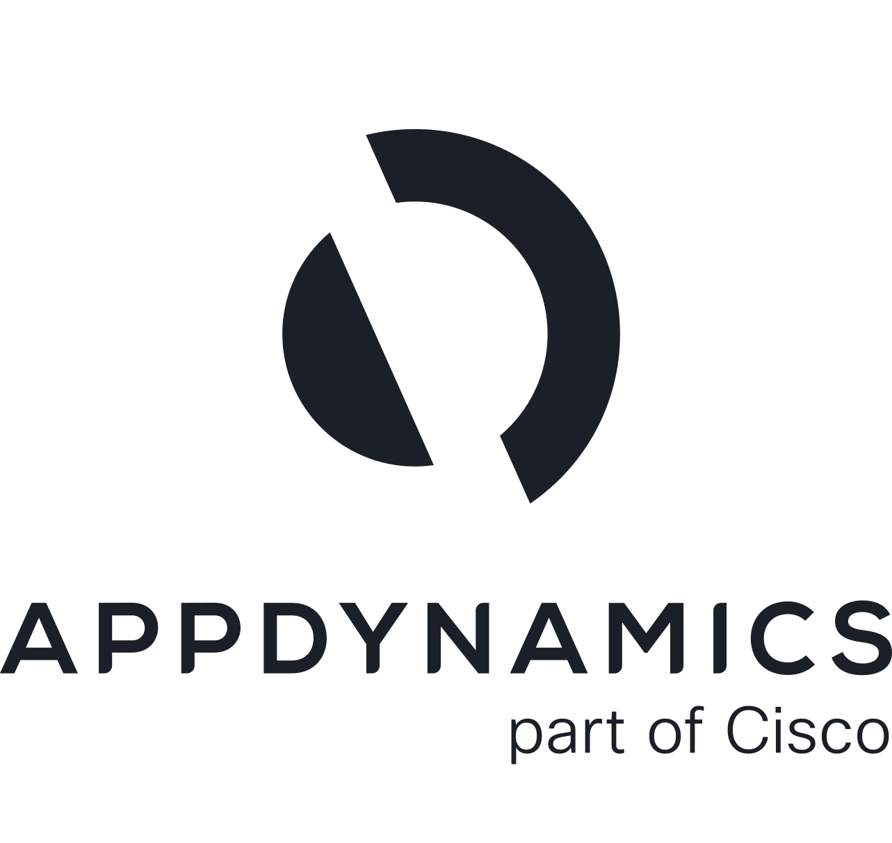

Experiencias digitales confiables, visibles y seguras.
Acompañamos a las organizaciones con soluciones especializadas de DevSecOps, Observabilidad y Ciberseguridad para operar mejor y responder más rápido.
Tres capacidades conectadas con una misma operación digital.
Integramos herramientas, procesos y acompañamiento para que los equipos puedan entregar software, entender su operación y proteger el acceso a sus servicios.
DevSecOps
Acelera desarrollo, pruebas y despliegues con automatización, integración continua y seguridad incorporada.
Conocer DevSecOps →Observabilidad
Obtén visibilidad de extremo a extremo para detectar, entender y anticipar degradaciones de servicio.
Conocer Observabilidad →Ciberseguridad
Protege identidades, accesos, aplicaciones y datos con una estrategia moderna basada en riesgo.
Conocer Ciberseguridad →De la señal al contexto. Del contexto a la acción.
Integramos monitoreo, analítica y automatización para reducir tiempos de diagnóstico y mejorar la experiencia de usuario.
Tecnología con acompañamiento especializado.
Desde 1992, TecnoMedia trabaja con clientes empresariales para diseñar soluciones de TI alineadas a necesidades reales de operación.
Conocer la empresaDiseño, integración, operación y mejora continua.
Menos fricción operativa y mayor velocidad de respuesta.
Consultoría especializada y trabajo cercano con los equipos.
Soluciones pensadas para entornos empresariales críticos.
Tecnología líder, integrada por especialistas.
Un ecosistema de fabricantes y plataformas para construir soluciones completas.

AppDynamics Datadog
Datadog Splunk
Splunk Grafana
Grafana¿Quieres revisar tu operación digital?
Cuéntanos el reto y te ayudamos a ubicar la solución adecuada.